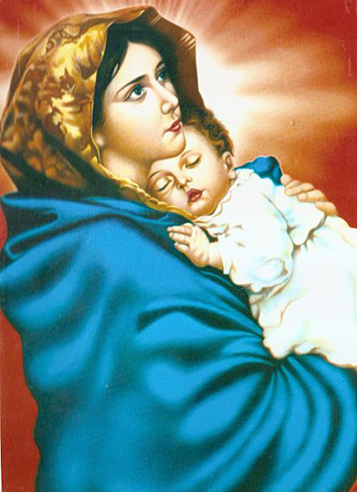

Our Patron Saint
Mary was the daughter of Joachim and Anna, took her to live lifelong service as a consecrated virgin in the Temple in Jerusalem when she was three years old. Mary was avowed to be a Virgin and She lived in the Temple until She was 12 years of age. Then She was betrothed to Joseph at the bidding of God's angel who ordered all to gather their sticks, with everyone's name written on his own stick, and place them in the altar. Joseph's stick sprouted. So, he received the Virgin and took Her home. It is also said that a dove appeared out of Joseph's stick and that it flew and settled on his head.
In the sixth month, God sent the angel Gabriel, as a herald of the great news to Mary saying: "Hail, thou that art highly favoured, the Lord is with thee.. Blessed art thou among women.... Thou shalt conceive in thy womb and bring forth a son, and shalt call his name Jesus." . The area of Christian theology, Mariology highlists The conception of her son Jesus is believed to have been an act of the Holy Spirit, and to fulfil the prophecy of Isaiah that a virgin (or maiden[2]) would bear a son named Immanuel ("God with us"). Mary is the most prominent feminine figure in Christianity and the most meritorious saint in church history.